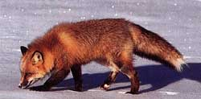
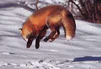

Issue #207 - December/January 2005
“But while the earth has slumbered, all the air has been alive with feathery flakes descending.” - Henry David
Thoreau
The coming snow announced its intentions in the late afternoon, with a steady gathering of low gray clouds breathing a chill forewarning, the smell of ice in the air. That evening on the back porch, as I clicked off the light before going inside to bed, I could hear the whispers of first flakes falling in the darkness.
Morning’s sun revealed 2 ivory inches shining bright atop last week’s heavier snowfall - icing on the cake. Not so much as a twig interrupted the smooth layer that blanketed our yard ... except ... over by the tall hemlocks, barely visible from where I stood on the porch, a series of tiny pockmarks led off toward an old logging road that climbs up the forested mountain behind the house.
The tracks were too distant to identify, but I could read them just the same: Follow me, they said. A hat, a coat and two boots later, I was out the door.
There are all sorts of snow - dry, pelletlike, icy, powdery and dozens more. But the night had brought the best sort in my book: the fluffy-sticky sort, the wonderland sort. Clinging to every branch and twig of every bush and tree, smoothing every surface and softening every angle, the flakes had transformed the forest from twiggy jumble to fluffy ice-crystal filigree.
What’s more, the snowfall had created the perfect conditions for a would-be winter snoop - I mean, tracker - like myself. Dry, powdery snow reveals few footprints, and shifts with every breath of wind, clearing the snow-slate. Deep, heavy snow keeps most creatures bedded down - walking is difficult, and so is finding food. But last night’s shallow coating atop a firmer layer had created a clean, easy-to-read parchment, and the morning’s still-below-freezing temperature had preserved any tracks scrawled since the flakes ceased falling.
The squirrel’s tracks crisscrossed the old road, linking one tree to another. Some of the prints showed perfectly - narrow, clawed feet, with four long toes indicating front feet and five toes in the rear. All squirrels display similar tracks, with larger species leaving proportionately larger prints.
Identifying the maker of tracks is often easier than you might think, especially in ideal conditions when footprints show distinctly. Using a good field guide, even a beginner can quickly learn to recognize common mammal prints, such as the deer’s (side-by-side teardrops) and the house cat’s (the size and shape of a quarter, and clawless because cats retract their claws).
Even when footprints aren’t clear - which is most of the time - the patterns of prints can tell all. Different animals move differently, placing their feet in ways that create distinctively different footmark arrangements. For instance the red squirrel, like all squirrels, is a hopper. It moves by springing ahead with its rear feet, coming down on its front feet with the right and left paws next to each other, and then pulling its rear feet in front of and to each side of the forefeet to push off again (track shown at right). Thus it leaves behind a series of two close side-by-side dots (the forefeet) followed by two more widely separated side-by-side dots (the rear feet), a space (where the animal was airborne), then the two-close-dots and two-wider-dots again, and so on. Rabbits also are hoppers and leave similar tracks, but because they tend to land with one forefoot in front of the other, their front-foot-rear-foot pattern creates a distinctive “Y” shape (shown at left).
Having a hard time visualizing this? The best way to learn any walking pattern is to imitate it. To play the role of a hopper, squat down, reach out and put your front “paws” (your hands) on the ground, then bring your rear paws (your feet) up ahead of and to the outside of your arms. Few humans are nimble enough to bring their feet as far past their front “paws” as can a rabbit or squirrel, and you certainly won’t be able to push off again with your rear “paws,” but you’ll get the idea.
As you go through the movements, watch where your front and rear “paws” come down in relation to one another. Try doing it the squirrel way (hands side by side) and then the rabbit way (one hand in front of the other).
Properly chastised by the still-chattering squirrel, I turned up the road toward deeper woods. A quarter mile later a brook gurgling to my left, but hidden in a thicket, pulled me off the path - stream banks are always good places to look for tracks. In summer at this spot I could count on finding the five-fingered prints of raccoons, each track eerily resembling a tiny child’s hand. Once, I spotted a young raccoon here in time to see it waddling off.
Raccoons and other lumbering, wide-bodied mammals, such as bears and opossums, have a way of walking that leaves a zigzag pattern of paired tracks, each pair consisting of a smaller front foot and a larger rear next to but at an angle from each other (shown at right). To see how this happens, get down on all fours, pretending your hands are front feet and your knees rear feet. Now “walk” by moving your right front and right rear feet at the same time, then your left front and left rear feet, and so on.
While you’re down there, try another common movement style. This time, “walk” by moving your right front and left rear “feet” at the same time, then your left front and right rear, and so on. Members of the dog and cat families, as well as deer and other hoofed animals, walk this way. They leave a nearly straight left-foot-right-foot track pattern.
No tracks at all, however, showed along the snow-smoothed streamside that day. Climbing back up to the old road, I grabbed a sapling for support - and was reminded that tracking involves more than just tracks. Droppings, tufts of fur, feathers, scratch marks, nibbled twigs - these too are important clues in solving outdoor whodunits. In this case the sapling’s tender lower branches had been chewed short. Because the cuts were ragged, I knew a deer had done the deed. Deer possess incisors only on the lower jaw and must tear at vegetation. Rabbits nibble branches, too, but their sharp uppers and lowers leave a clean, angled cut.
I walked farther up the road, detouring now and then to examine the meanderings of deer mice, the paths of cottontails weaving among brambles and some odd star-shaped tracks I’d never seen before - but later, with a field guide, identified as an opossum’s. Glancing at my watch, I laughed at myself: I’d been out for three hours, and had barely covered a mile. Such is a tracker’s lot. Once you start really looking at the signs of life around you, every square yard holds fascination.
I learned this years ago when I attended a weeklong workshop conducted by tracker and author Tom Brown Jr. “Every mark is a track,” Brown said. “Every dent, scrape, every rolling hill, every scratch is a track. The Grand Canyon is a water track. A fallen tree is a track of the disease that killed it and the wind that knocked it over. The ground is an open book. It is littered with tracks, from the largest to the smallest, and each one tells you something.”
Leaving the road, I clambered over a ridge into a sheltered cove. A single line of tracks wound toward an icy brook. The prints were rounded, like a cat’s, but slightly larger - and clawed. No, not a dog; the heel-pad marks were too small and faint. From earlier encounters, I knew these prints had been left by a gray fox.
I followed the animal’s trail, curious to know what it had been doing. Its path wandered unpredictably; the canine had scoured the cove for prey. In several places it had stopped, poking its muzzle into snow-covered grass, probing for mice. But neither fur, nor blood remained - the fox had come up empty. In another spot, its stride suddenly shortened - it had slowed, stalking, its body lowered, belly rubbing the snow. Then, a confusion of deep tracks, a flurry of kicked snow; the predator had sprung at a rabbit. A series of increasingly separated “Y”s - the fleeing cottontail’s leaps and bounds - disappeared into dense brambles. The fox had tried, in vain, to follow. It had circled the thicket several times, then walked away in defeat.
And so, apparently, the morning had gone for the fox - I never did find any trace of a kill. Eventually, the animal’s prints led back toward denser woods; it had headed home, hungry.
As I walked down the old logging road again, headed for home myself, I came upon yet another set of tracks in the snow, a creature treading the opposite way, its path meandering erratically, like the fox’s, the animal obviously searching, too - but for what?
All the creatures I’d followed that morning had been foraging for food, driven by nature’s eat-or-die reality. But the winter walker who had made these tracks - they were mine, of course - had been looking for sustenance of a different sort. I recalled another Brown quote. “You don’t have to follow an animal very far,” he said, “before you realize that its tracks are connected to the tracks of everything else, including your own tracks. You begin to see the web of life.”
As I stepped up on the back porch, my wife opened the door from the kitchen. I could smell soup simmering on the stove. “Hungry?” she asked. “Always,” I replied, thinking of the fox in its den now, the other creatures in their homes, too, and already looking forward to the next fresh snow, the next clean slate, the next time we’d be out together in the woods and fields, each of us searching, making tracks.
|
 A red fox scouts, then pounces after its prey. |
 The red fox’s trotting gait leaves a straight line of tracks, with the forefoot overprinted by the hind foot. |
|